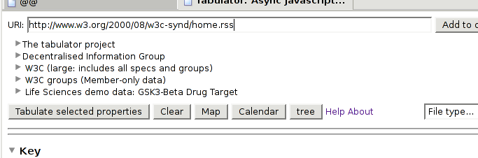
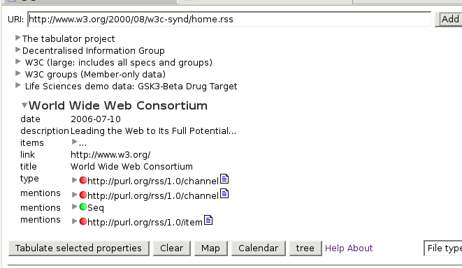
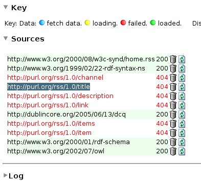
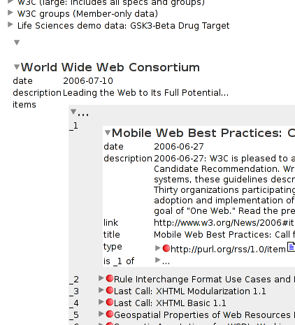
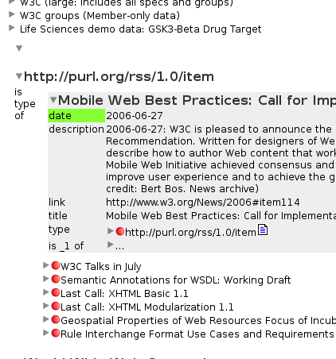
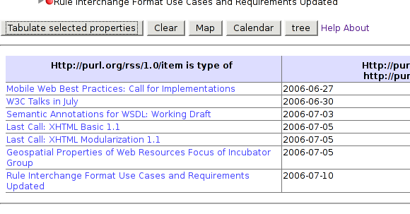
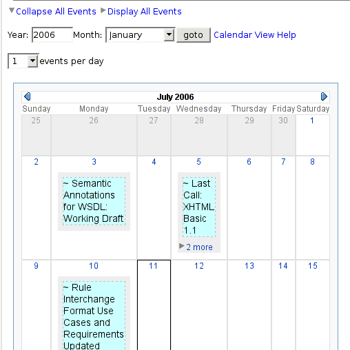

Tabulator calendar view
The calendar view allows you to view RDF Calendar data, and other time information (in the ISO 8601 format). See also: How to use Calendar View
- Start with the
development version of the tabulator.
-
Select a source of calendar info. Morten's SPARQL Timeline uses RSS. The tabulator calendar groks dc:date, so something like W3C's main RSS feed will work fine. Put its URI in the tabulator's URI text field and hit "Add to outliner".

When it's done it should look something like this:

- For fun, open the Sources tab near the bottom. Note that the tabulator loads the RSS and DC schemas, plus all the schemas they reference, and so on; i.e. the ontological closure. Hmm... the RSS terms seem to be 404.

- Now navigate the outline down to one of the items.

and then re-focus (shift click) on the rss item class itself, and then open an item and select the date property.

- Now hit "Tabulate selected properties". You'll get a table of items and their dates.

- OK, so much for review of basic tabulator stuff. Now you're all
set for the new stuff. Hit Calendar and scroll down a little:

Note the Export button with the SPARQL option. That's a whole
other item in itself, but for now, you can see the SPARQL query that
corresponds to what you've selected to put on the the calendar:
SELECT ?v0 ?v1
WHERE
{
?v0 <http://www.w3.org/1999/02/22-rdf-syntax-ns#type> <http://purl.org/rss/1.0/item> .
?v0 <http://purl.org/dc/elements/1.1/date> ?v1 .
Fun, huh?